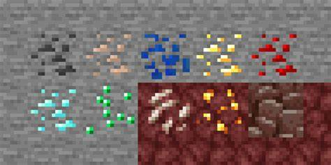
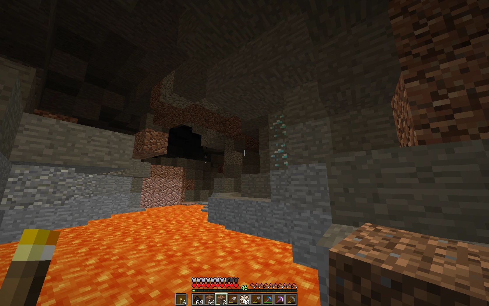

Here is an introduction to the game mechanics of Minecraft. The Minecraft’s sandbox-like playstyle introduces a generated world, boasting of its endlessly expansive landscapes and interactive NPCs. At the heart of Minecraft’s experience are a series of fundamental aspects that form the basis for gameplay: mining, crafting, combat, exploration, and survival. This list will layout the 5 different mehcanics, giving an in-depth explanation of each and how the player can master the five distinct but pivotal features of Minecraft.

To start, mining is an essential mechanic in the game. This enables the player to progress and grow stronger. There are many ores, with each serving a different but useful purpose. Coal is good for fuel, while copper can be used for lightning rods and other miscallaneous reasons. Iron and diamonds can craft powerful equipment, while gold, redstone, and lapis are useful to buff the player and create machines. But in mining there also comes risks. A major risk are the environmental dangers that come with mining. Lava is found everywhere in the deep parts of the cave, catching unaware players who dig straight down. Now, spikes on the ceiling and the floor can also damage players, creating a dangerous turf to mine on. Caves also are generated in different ways, with some caves being narrow and deep which can cause players to fall to their death. Another risk are hostile mobs, which spawn in the dark parts of the mine. Mobs range from zombies to the warden, gaining power and strength as the player mines deeper. Another important aspect when it comes to mining are upgrading. Different ores can only be mined through different levels of pickaxes. For example, only a diamond pickaxe can mine obsidian, so the player must gather diamonds before going to the nether. Most importantly, to even use the ores, the player must use a furnace to smelt the ores into the bars form, allowing for crafting. Despite the many dangers and intracacies of mining, it is essential to the players success.


The next aspect in Minecraft is crafting, a primary apsect for the game and the basic skill to aquire. The player's inventory comes with a small crafting menu, only able to craft basic necessities such as torches and buttons. The more advanced crafting all lays within the crafting table, the foundation of all items. The crafting table opens a wide variety of items, spanning from dyes to diffrent kinds of blocks. Other crafting structures such as the stonecutter can craft diffreent more more specific items. There are many different guides to craft in Minevcraft, and it takes time to memorize all of the different recipes.


Another important aspect in Minecraft is combat, where the player defends themselves from different kinds of hostile mobs. The main goal of the game is to defeat the Ender Dragon, so combat is heavily revelant in all levels of the game. The main tool to use against mobs are swords, but players have the option of using bows, crossbows, and maces. Mobs drop useful and necessary loot to progress through the game like ender pearls, emphasizing the need to fight. But be careful, mobs get stronger the farther away the player is from spawn, and mobs can come in different sizes. They have melee and ranged attacks, with some mobs having special combat attributes like the creeper. Through this, the player must be smart with combat: they must utilize tools well and understand when it is good to use which weapon. For example, enderman cannot be hit by ranged weapons, and mobs like blazes and ghasts and usually taken out by ranged weapons. Through this, the player must plan out attacking the mobs, and must be careful and smart because their strength should not be underlooked. Ultimately, combat in Minecraft is risky but cannot be avoided, making it another pivotal aspect of the game.

Exploration may be the most important aspect of Minecraft. This is how the player can find the necessary structures to not only boost their progression, but also to find shelter and valuables. In order to beat the game, the player must find the end stronghold and beat the ender dragon. Normally, the player would first look for a village or a ruined portal to find an early headstart. Other structures like temples, mansions, shipwrecks, and shrines can also be used for an early headstart, but are more rare. In the middle/late game, players would seek strongholds and mazes, unlocking them rewards and high level loot. Exploration is necessary for the player to beat the game, and it encompasses the other apsects because it requires the player to mine, build, craft, and kill to explore.

Survival is the last aspect of Minecraft. In order to progress, survivability is key. Losing all your items when you die can push you far back, so it is necessary to stay alive. But fortunately for the pleyer, there are many ways to keep the player alive and strong. Potions, totems, and food are the primary ways to keep the player healthy. Armor and weapons also fend off monsters at night and reduce incoming damage. Despite the many ways the player can keep themselves safe, staying alive is still key to progressing and thus also encompasses the other attributes of Minecraft.